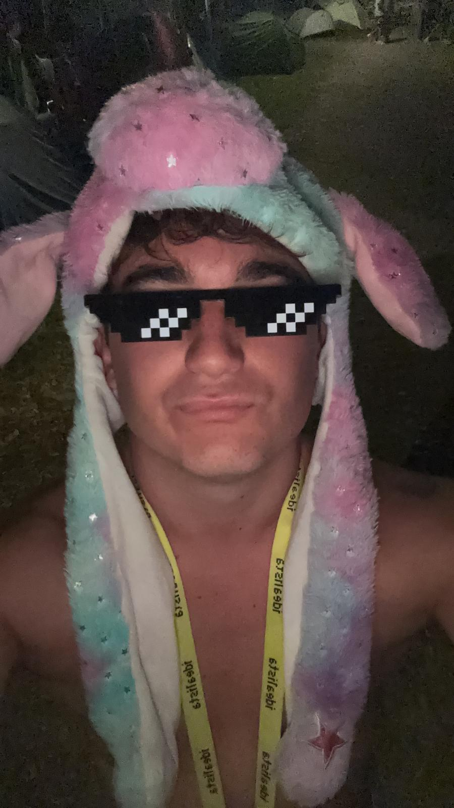
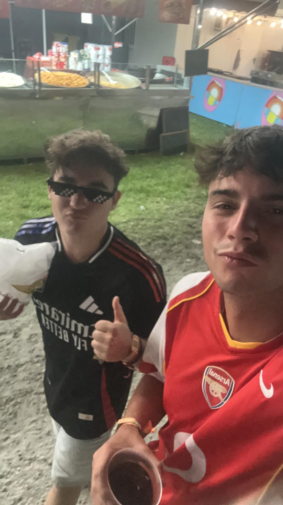
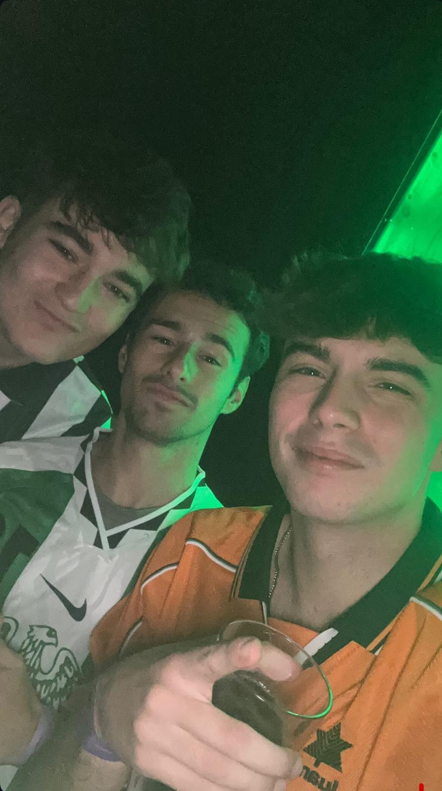
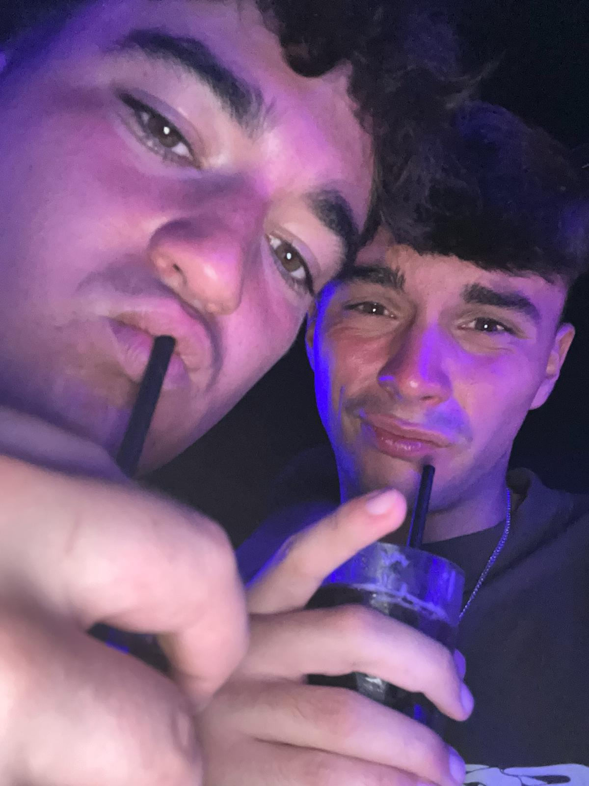
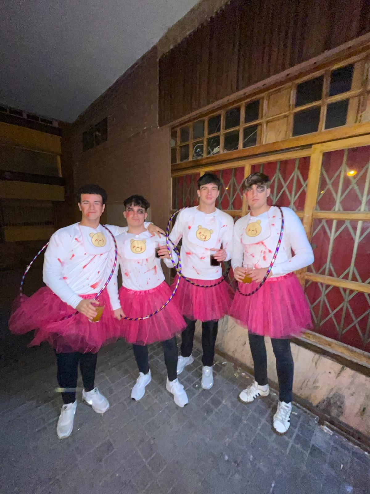

Alejandro
Defensa | Dorsal 23
Alejandro, con el dorsal 23 a la espalda. Se trata de un jugador un tanto misterioso, y con complejo
de oso, ya que se pasa la mitad del año metido en su casa ahorrando energías para conservar su
musculatura.
Sin duda su punto fuerte es la comunicación dentro del campo, los rivales acaban con dolores de cabeza de tantos gritos. A pesar de ello, es un jugador que se deja la piel en el campo y las botas en Alcalá de Henares.
En lo personal es muy servicial, ya que desde los 10 años le tienen explotado de camarero en el catering, lo que se ha convertido en su pasión. No es capaz de correr más de 10 minutos en el terreno juego, pero si de trabajar 48 horas seguidas, sirviendo copas. Es algo de otro mundo.
Sin duda su punto fuerte es la comunicación dentro del campo, los rivales acaban con dolores de cabeza de tantos gritos. A pesar de ello, es un jugador que se deja la piel en el campo y las botas en Alcalá de Henares.
En lo personal es muy servicial, ya que desde los 10 años le tienen explotado de camarero en el catering, lo que se ha convertido en su pasión. No es capaz de correr más de 10 minutos en el terreno juego, pero si de trabajar 48 horas seguidas, sirviendo copas. Es algo de otro mundo.
Galería




